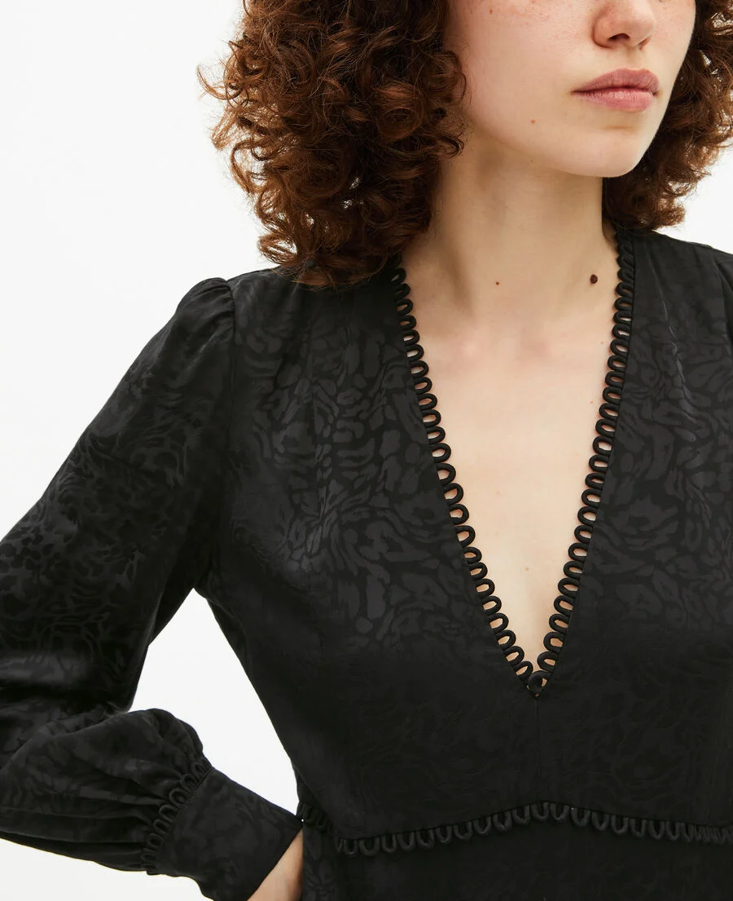
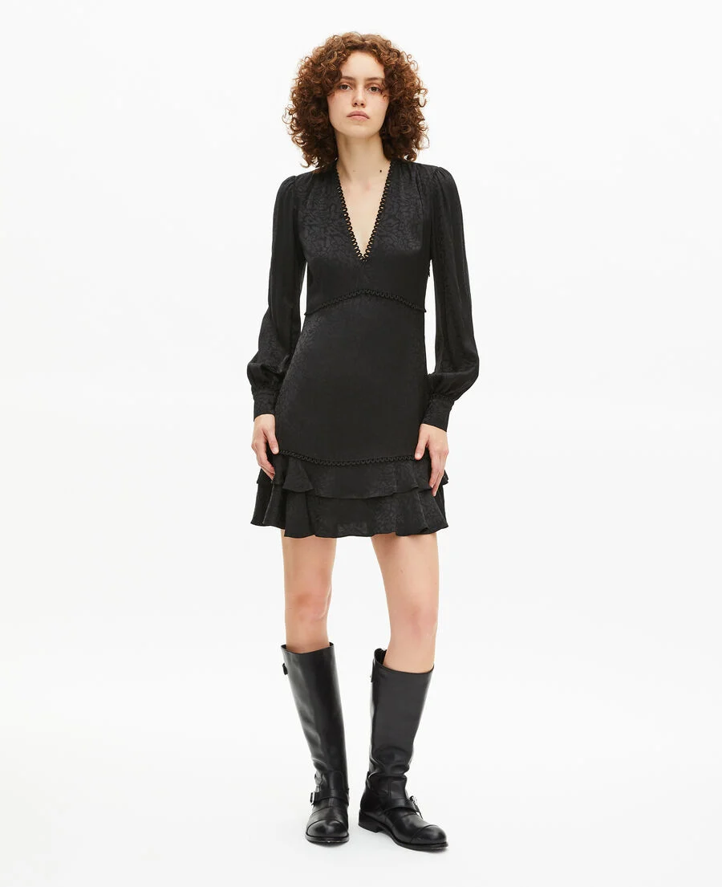
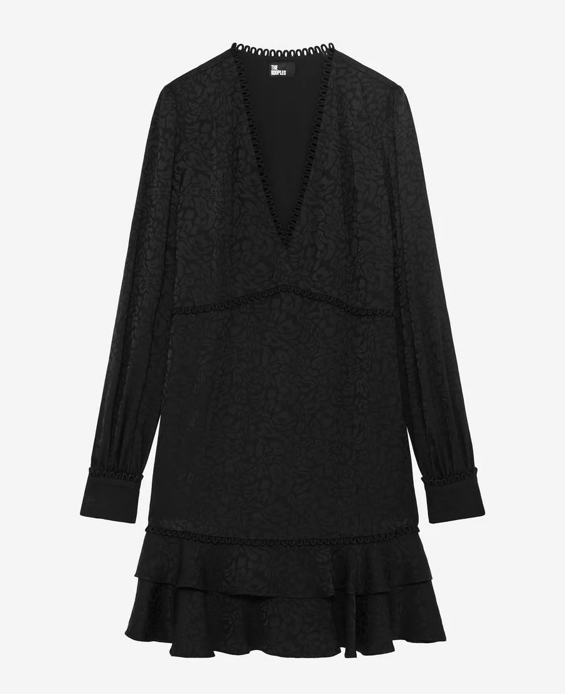
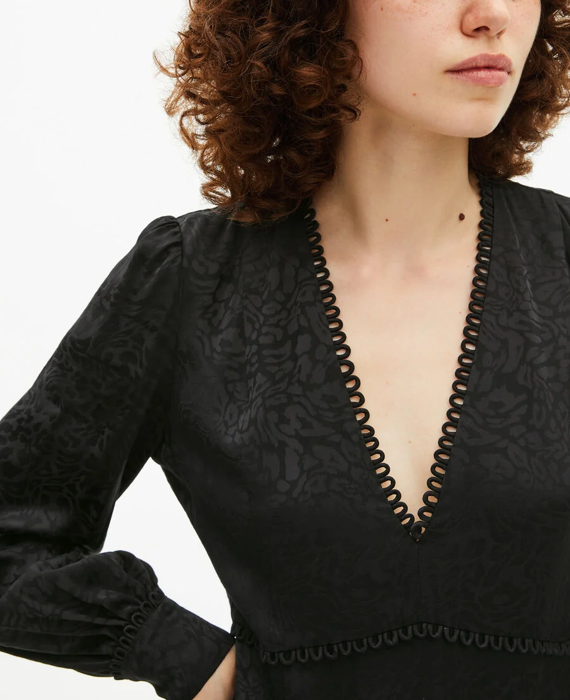
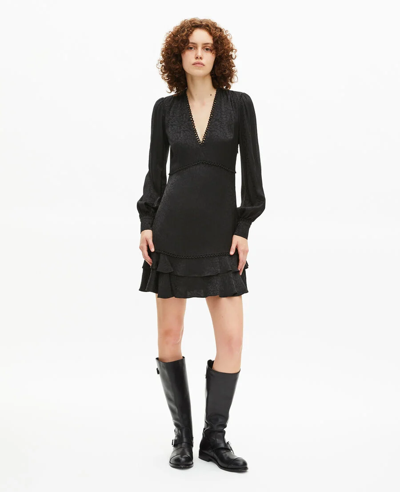
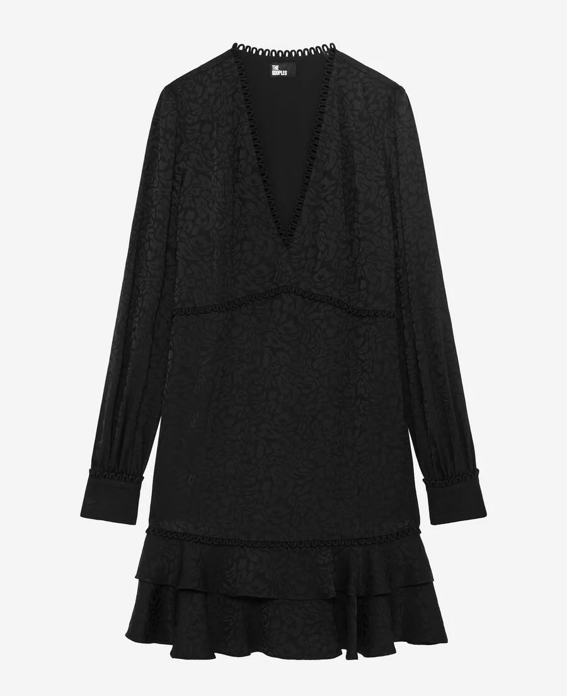

Matière / composition
La matière première est une fibre chimique (probablement polyester). La composition exacte n’est pas indiquée, mais l’aspect régulier, la bonne tenue et la stabilité dimensionnelle orientent vers une fibre synthétique ou artificielle.
Fil
Le tissu est réalisé à partir de deux types de fils distincts, utilisés selon leur fonction dans la structure jacquard :
- Les fils constituant les motifs sont des fils simples, fins et réguliers. Ils permettent une bonne définition du dessin et une lecture nette du motif, sans effet décoratif lié au fil lui-même.
- Les fils constituant le fond du tissu (toile) sont des fils retors, composés de plusieurs fils assemblés.
Construction textile
La structure du tissu chaine et trame.
Armure
Armure : armure complexe de type jacquard
Le dessin est obtenu par la commande individuelle des fils de chaîne, permettant l’alternance de zones mates et brillantes, l’apparition de motifs texturés et des jeux de relief.
Le liage est variable selon les zones du motif, ce qui est caractéristique des étoffes jacquard tissées.
Ennoblissement couleur
La coloration semble obtenue par teinture en pièce ou par utilisation de fils déjà teints, ce qui permet de renforcer les contrastes du motif et de valoriser le relief du dessin.
Ennoblissement d’apprêt
Le tissu présente un apprêt de stabilisation et de mise en main, améliorant la tenue, la lisibilité du motif et la résistance à l’usage.
Contexture
- La contexture est moyenne à serrée, avec une structure dense et régulière.
- Le tissu présente une surface texturée, légèrement en relief, tout en conservant une bonne cohésion.
- La main est plutôt ferme, avec une sensation structurée, typique des tissus jacquard tissés.
Poids et usage imaginé
Le poids est estimé comme moyen, probablement compris entre 180 et 300 g/m², en fonction de la densité du motif et du nombre de fils engagés dans le dessin.
Produit fini
ROBE COURTE EN JACQUARD LÉOPARD NOIRE, The Kooples
Voir produit
 




